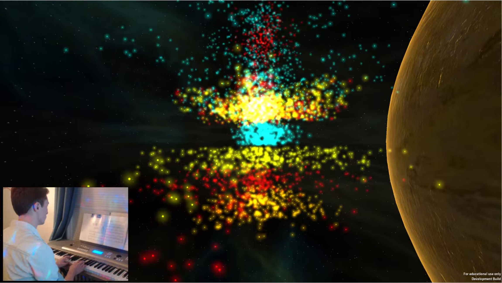
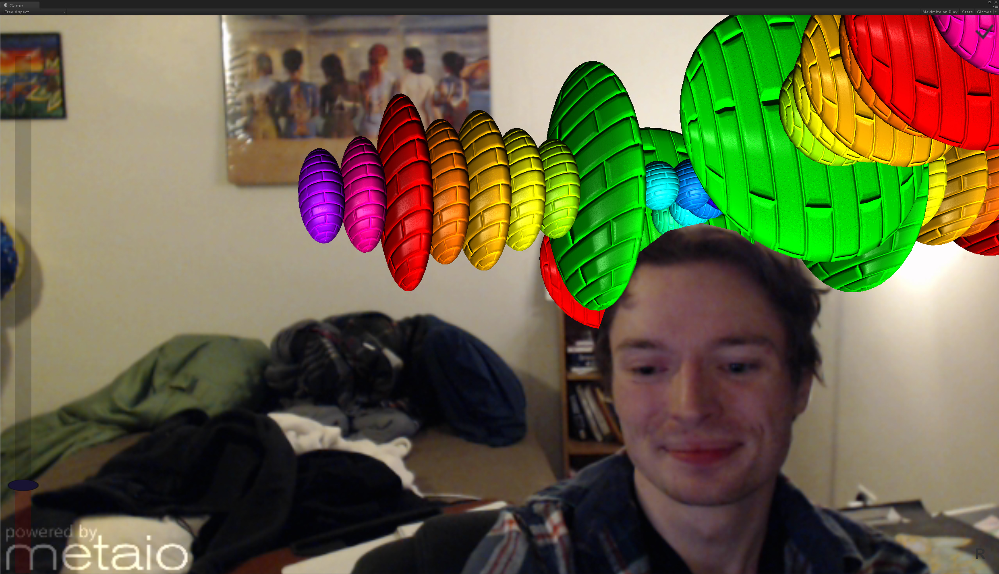

An early version of MEZ
One thing I love is synaesthesia, and made many attempts to simulate it with every method at my disposal, the current result of which is MEZ. It has the capability to analysis the notes played by a MIDI keyboard connected to a computer, shown above, as well as more general audio data through FFT transformations.

Synthesizing novel environments by combining the power of distributed networks and computing power with the realism of our local realities is difficult to do well. Here I'm rendering some dynamic elements that change based on the music, as well as being occluded by estimations of my head's position in 3D space.